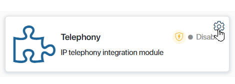
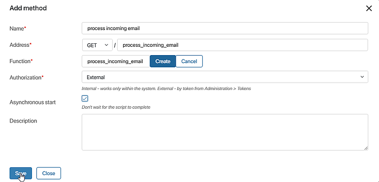
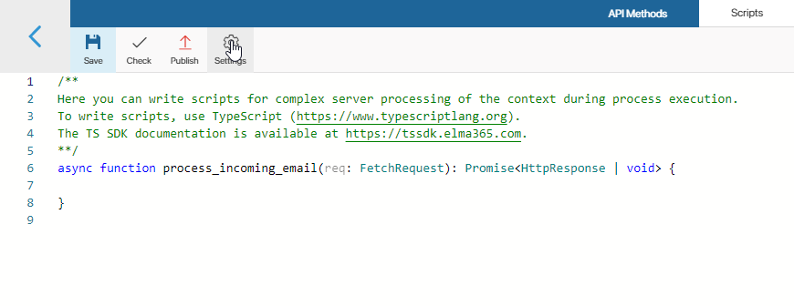
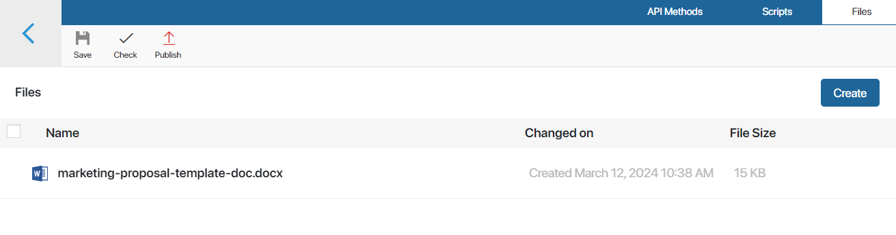
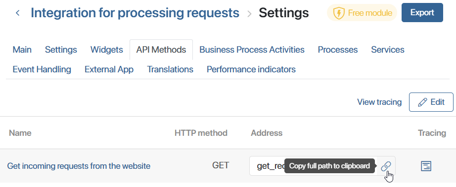

In BRIX, you can create your own custom methods in modules and use them in the Web API, widgets, pages, and process scripts, or when configuring document templates. For instance, you can design methods to initiate a business process, conduct complex data retrieval, or establish intermediate communication with an internal or external system.
You can also devise general-purpose functions and reuse them in different places.
Create a method
To create a method, do the following:
- Go to Administration > Modules.
- Hover the mouse over the module and click the gear icon.

- Go to the API Methods tab.
- Click Edit. The method editor will open.
- Click the +Add button. In the window that opens, enter the required information.

- Name*. Enter the method name.
- Address*. Select one or more HTTP request methods from the list. The following methods are available:
GET,POST,PUT,PATCH, andDELETE. Specify at what address the method will be available at. In doing so, you can:- Specify the path to nested methods. Use a forward slash
/to specify a child method, e.g.main/email_dispatch or call_events/route/. The number of nesting levels is unlimited. - Specify a wildcard for passing variable values to the method URL. Add a combination of
/*characters at the end of the method address, e.g.orders/*ororders/process/*. In the method script you will be able to customize the processing of variable values that are passed when the method is called. For example, you can pass the user ID to get the user's name and e-mail as a result of the request. Read more about scripting such methods and calling them in the Use API methods with wildcards in modules article.
Note, the/and*characters at the end of the address do not ensure the uniqueness of the method, so the addresses of two methods cannot differ only by them. For example, if you have already added afiles/method, an error will occur when you try to create afiles/*method.
- Specify the path to nested methods. Use a forward slash
- Function*. Create a function that will be executed when a request is received.
- Authorization. Select an authorization type to use when a request is received.
- Internal. When this option is selected, the method can only be called within the module, for instance, in other methods, widgets, business processes activities, and event handlers. To call it, you need to use the
Namespace.api.method_namecommand. Read more below. The user under whose name the script runs must be logged in to BRIX. - External. When this option is selected, the method will be available from the external system via a token.
- Internal. When this option is selected, the method can only be called within the module, for instance, in other methods, widgets, business processes activities, and event handlers. To call it, you need to use the
- Asynchronous start. This option allows you to continue your work without waiting for method execution to finish.
- Description. Write a detailed description of the method.
- Go to the Scripts tab and write the code. Use the TypeScript programming language. To learn more about the basic principles of script writing in BRIX, please visit BRIX TS SDK.
- Save and publish the method.
Access to global constants
By default, API methods can only access workspace components at the level of which they are configured. You can additionally access other system objects via a global constant. To do this, in the method editor go to the Scripts tab and click Settings in the top panel.

You can use the following options:
- Global constants. Check the Global option to be able to refer to objects from all workspaces in the system and to global parameters. The Global constant is used for this purpose.
начало внимание
When using the Global constant to write an API method, a module with this method cannot be exported.
конец внимание
- Optional dependencies (available in the Imports object). Select workspaces or custom modules and set optional dependencies with them. After that, they can be accessed in scripts via the Imports constant.
To create a dependency, click +Add Workspace and select a system component. Then, in the Alias column, set a unique name for it that will be used in the script. Latin letters and numbers are acceptable, and you can use an underscore to separate words. By default, the workspace code or module ID is used.
Use files in scripts
You can use images, document templates, instructions, etc. in the module scripts. To do this, in the method editor, go to the Files tab and upload the required document.

Open the file in view mode and copy its identifier in the URL of the page. Using the identifier, you can refer to the uploaded file in any module script.
Server dependencies
In BRIX On-Premises, you can add npm packages with server dependencies on the Files tab. Read more in the Server dependencies of npm packages article.
Trace API methods
If in Administration > Developer Tools, tracing is enabled for an API method, you can script execution. This helps you evaluate the duration of individual requests, optimize the code, and identify the causes of errors.
To view the list of traces, go to the the module settings and open the API Methods tab. To view the records:
- By all module methods — click View tracing in the upper right corner of the page.
- By certain method — click
 next to the method.
next to the method.
Read more about tracing settings and trace information in the Trace server scripts article.
Call an API method from a script
After creating an API method in a module, you can call it in any script of this module. To do that, use the api property of the Namespace global variable:
let response = await Namespace.api.some_method.call({
method: "POST",
headers: {
"X-My-CutomHeader": "Some header data"
},
query: {
"skip": "0",
"take": "10"
}, body: "Any body here"
});
The HttpApiRequest type is sent to the method. It extends the FetchRequest type and is used in the fetch() method.
When the call() method is called, a web call to the API method is made using the standard HTTP protocol. Therefore, the response from the method comes as a standard FetchResponse object.
To configure modules with webhooks, you can get an API method address using the Namespace.api.some_method.getUrl() command. It will return a string with the full address of this method for further calling. This method is useful when an external service requires you to specify a return address for a call.
Call an API method from an external system
An API method in the module can be called from an external service. To do this, a direct link to the created method in the form of a full URL is specified in the web request.
To get the link, open the module settings page and go to the API Methods tab. Next to the method name, click the URL copy icon.

If the external authentication option is selected when creating a method, the request uses the Authorization header and specifies an individual user token. Read more on the BRIX public API page.
Here is an example of calling an API method in a module via the fetch command:
let response = await fetch('https://abcd1234.brix365.en/api/extensions/f1e6cf15-7c65-4be5-8443-021a280dcd80/script/upload', {
method: "POST",
headers: {
"Authorization": "Bearer " + secureToken
},
query: {
"file_id": fileId
},
body: JSON.stringify(uploadBody)
});
Service headers
In API methods, each request object passed into a script contains headers that store information about the invoked method:
:method. The HTTP method.:path. The part of the URL method address that comes after the domain, along with query parameters. For example,/test1/test2?q=12345&n=aaa.:scheme. The protocol used in the method: eitherhttporhttps.:authority. The domain and port (excluding 80 and 443), from which the request originated, for example,brix365.comorlocal.brix365.dev:4200.
Found a typo? Select it and press Ctrl+Enter to send us feedback